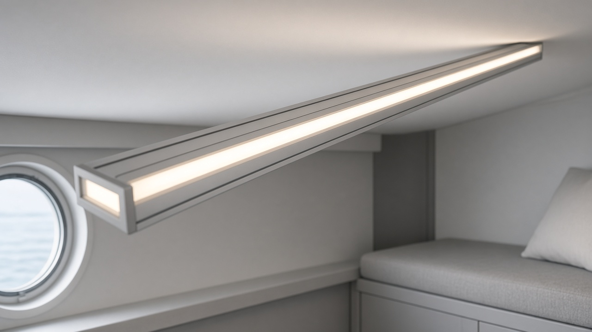
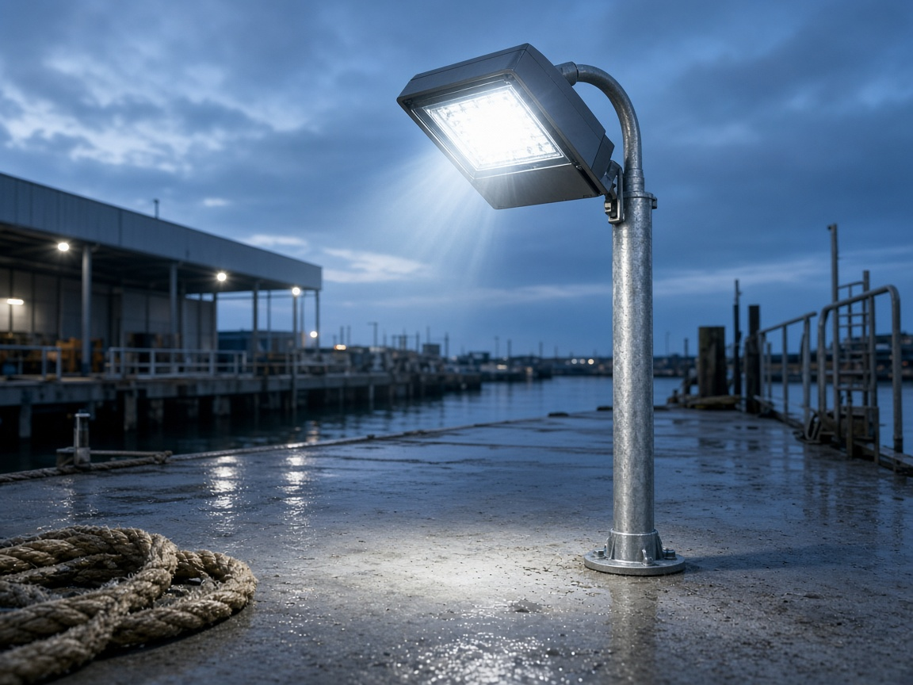
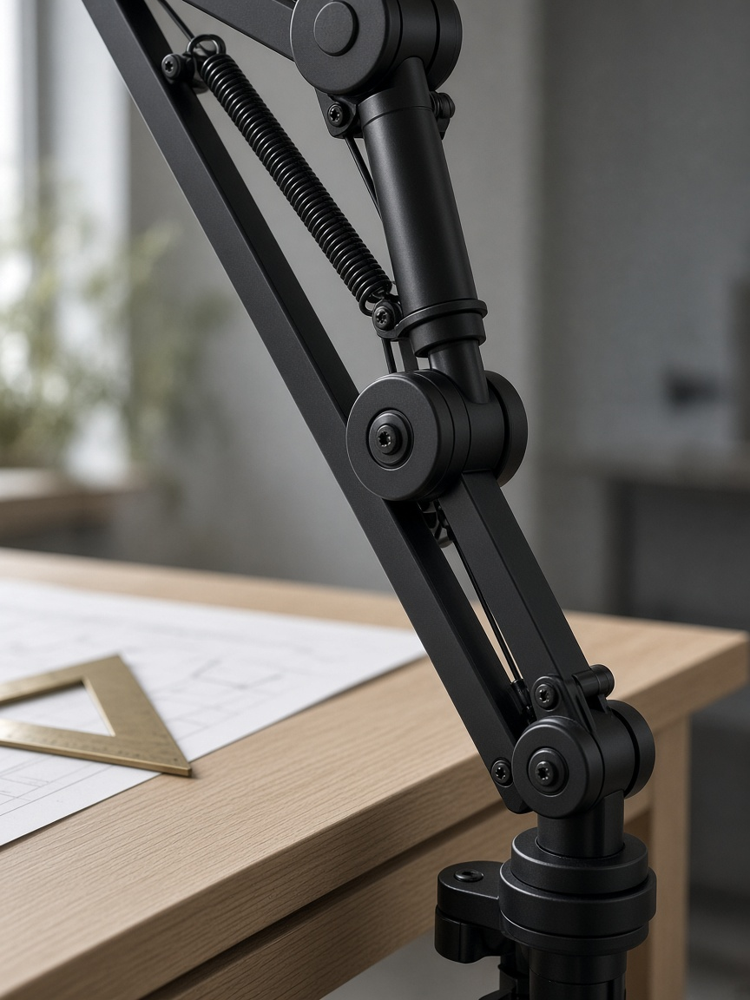

Current catalog still
Linear 40
Ferry cabin
48V ceiling channel. Cool daylight, empty cabin, no retouch of the room.

Other frames

Dock flood
Municipal yard · 2026

Task arm
Drafting table · 2026
Studio
Rail Still photographs lighting hardware for manufacturer catalogs. The room in the frame is the room that was there.